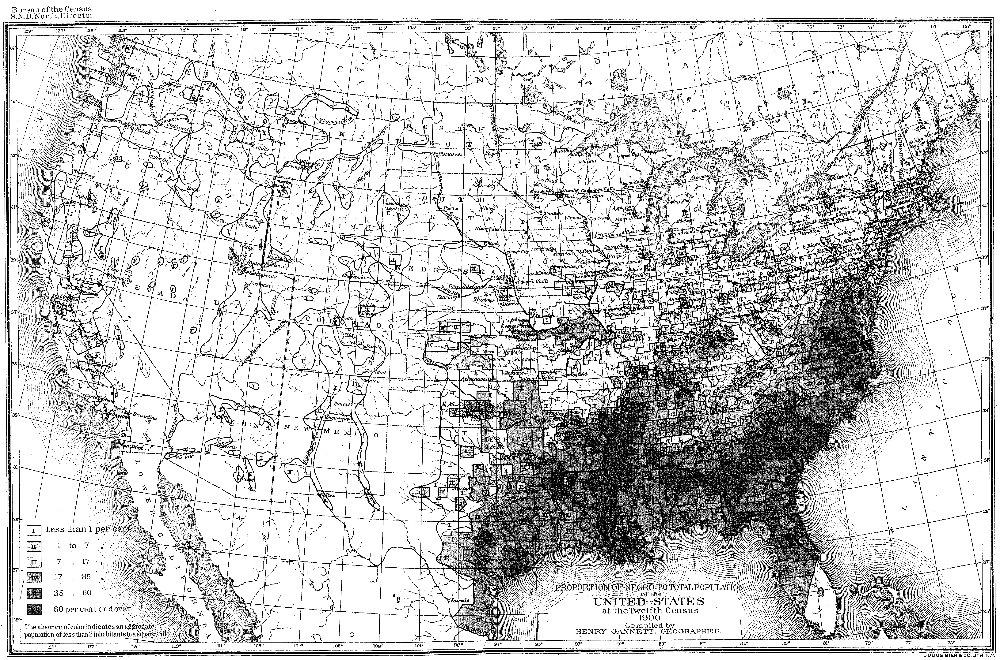

Wedding Witnesses Often Were:
- Parents or siblings
- Close family friends
- Other church members
- Future spouses for siblings
Baptism Sponsors/Godparents:
- Aunts and uncles
- Grandparents
- Close family friends who became "family"

Detective Tip: Same witness names = family connections!